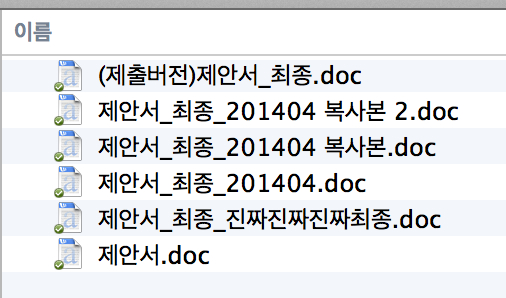
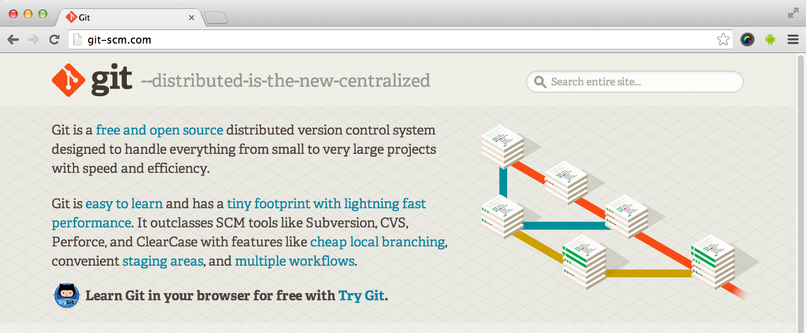

제대로 써보기
이해와 활용
rev.201406
이종은
인디 개발자

목차
당신은 누구십니까?^^
- 개발자?
- it 업종?
- 기타?
- 컴퓨터로 업무보시죠?
파일과 함께하는 일상
일상 업무
긴급 상황 발생
Q. 대비책이 있나요?
우리는 누구? 인간!
인간은 도구를 사용하는 동물
파일 관리 도구의 탄생
도구의 구분
Revision History Tracker :
google 문서의 '업데이트 기록보기', 워드프레스 '리비전'
Revision Control Software :
Git, SVN, Perforce, Mecurial, CVS...
둘의 차이가 뭐죠?
왜 사용하나요?
- 무언가 잘못되었을 때 복구를 돕기 위해
- 프로젝트 진행 중 과거의 어떤 시점으로 돌아갈 수 있게 하기 위해
- 여러사람이 작업할 때 쉽게 합치기 위해
- 누가 어떤 부분을 수정했는지 추적하기 위해
- 안전하고 자유롭게 작업하기 위해
git-scm.com
SCM?
Source Code Management
Source Code?
네! 개발자를 위한 도구입니다.
리누스 토발즈

Git 바로 알기
설마?
git 그리고 github
==
앞으로 쏟아질 용어들
- Remote Repository, Local Repository
- Staging Area, Index, Working Directory, Sanpshot,
- Commit, Checkout, Reset, Merge,
- HEAD, Branch, Tag,
- Pull, Push, Fork
왜 좋은가?
- 빠르다
- 안전하다
- 자유롭다
빠르고 안전하고 자유로운 이유 1.
거의 모든 동작은
내 컴퓨터(Local)에서 동작한다.
빠르고 안전하고 자유로운 이유 2.
분산버전 관리 시스템

빠르고 안전하고 자유로운 이유 3.
은 당신이 한 거의 모든 일을
알고 있다.
Git으로 기록하기
설치 먼저
- Git :
git-scm.com - Source Tree :
sourcetreeapp.com - Sublime Text :
sublimetext.com/2
Github.com 계정 만들기
저장소 만들기
git init
git init <directory>
git init --bare <directory>
일단 파일 만들고 커밋해보자
git add first.txt
git commit -m "first commit"
Commit은 Snapshot이다.
add는 Stage 위로 올리는 것

기록 절차

git add first.txt
git commit -m "first commit"
무엇이 생기고 어떤게 기록되나?
- Blob : 파일을 찰칵
- Tree object : 폴더구조를 찰칵
- Commit object : Tree의 hash와 Commit 부가정보를 담아 찰칵
- README
- src/hello.c

현재 상태 및 기록 살펴보기
git status
git log
파일 상태의 변화
- Untracked
- Staged
- Unmodified
- Modified
Git으로 되돌리기
방법 1. Checkout
전체 혹은 특정파일을 특정 커밋의 상태로 되돌린다.
- Commit을 체크아웃
- File을 체크아웃
Checkout 명령어 사용법
git checkout <commit>
git checkout <commit> <file>
방법 2. Revert
특정 Commit을 되돌리는(Undo)하는 Commit을 생성한다.
git revert <commit>
Checkout
Commit 전 변경사항은 Checkout!
커밋을 만들지 않고 Working Directory의 일부 혹은 전체 내용이 바뀜
Revert
Commit 후 커밋 내용을 통째로 되돌릴때는 Revert!
되돌리는 내용을 담은 커밋을 발생시킨다.
방법 3. Reset
이용에 주의해야 함. 위험한(?) 명령어
File을 Reset하는 것은 Unstaged 상태로 만드는 것
Commit Reset은 현재 Branch를 해당 Commit으로 이동하는 것
git reset <file>
git reset <commit>
Revert vs. Reset

방법 4. Clean
Untracked File을 지움, .gitignore에 명시된 파일은 안지움
git clean -f
Git으로 가지치기(Branch)
이리로 가도 되고, 저리로 가도 되고
Branch 명령어 사용법
git branch
git branch <branch>
git branch <branch>
Checkout 명령어를
이용한 Branch 다루기
git checkout -b <branch>
git checkout <branch>
Merge
이용한 Branch 다루기
git merge <branch>
git merge --no-ff <branch>
Merge의 종류 1.
Fast-Forward Merge

Merge의 종류 2.
3-way merge

Git 원격 저장소
Local? Remote?

Remote를 만들어서 Push해보자
git remote
git remote -v
git remote add <name> <url>
git remote rm <name>
git remote rename <old-name> <new-name>
그 특별한 remote 이름
origin
Fetch vs. Pull
Remote에 있는 내용를 전부 가져오는 행위는 동일
Local branch랑 합치면 Pull (내 작업 Working Directory에 영향)
다른 사람이 이미 remote를 만든 경우
Clone 해보자
Remote Repository를 내 local에다가 그대로 옮김
git clone <repo>
git clone <repo> <directory>
이제 협업할 준비가 되었다!
어떤 청책으로 협업 할 것인가?
Git Workflow
Workflow = Branching 정책(전략)
다양한 정책들..
- Centralized Workflow
- Feature Branch Workflow
- Gitflow Workflow
- Forking Workflow
Branch 하나만 쓸께요.
Centralized Workflow


Branch 하나만 쓸께요.
Centralized Workflow

개발 단위(기능) 별로 branch 만들께요.
Feature Branch Workflow

Feature Branch Workflow : master는 항상 무결점!
그럼 섞어서 확인은 어디서??
개발서버(develop), 실서버(master) 구분할께요.
Gitflow Workflow

개발서버(develop), 실서버(master) 구분할께요.
Gitflow Workflow
매번 git branch, checkout, merger,
brach 삭제 등을 해야한다고요?
네, 하지만 우리는 도구를 사용하는 동물!
Remote Repository도 각각 따로 둘께요. 공식 Repository는 관리자만!
Forking Workflow

개발자1 관리자 개발자2
개발자1, 개발자2가 완료했다는 것을 관리자에게 어떻게 말해주지?
Pull Request
내 Repository의 이 Branch를
공식 Repository의 그 Branch에 Pull해주세요.

준비된 내용은 여기까지!
점검 실습 or QnA
기타 : rebase, hook, .bash_profile ..